书写数字，最初是作为数量的笔录——债务多少、个人财产、田产大小。最初的书面数字系统与今日大不相同，而且常常使数学化简为繁。
心算十分重要。人人都得学会在心里默算简单的加减乘除，比如心算购买的商品的总价。但是，更复杂的计算还是付诸笔墨吧。我们把计算过程拆分细化，为此，要把工作中的数字写下来。现在用的这套数字系统我们称为印度-阿拉伯数字系统，它通行世界至少有600年了。这套数字系统有0到9这10个基本数字，然后是10、100，等等。它是数学课最早的内容。当你看到古人如何书写数字时，你就知道这套系统的奇妙之处了。
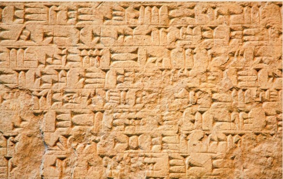
湿润陶土上用楔形小棍画出的楔形文字。数字也是用同样的工具画出来的。
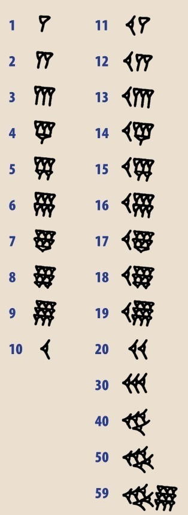
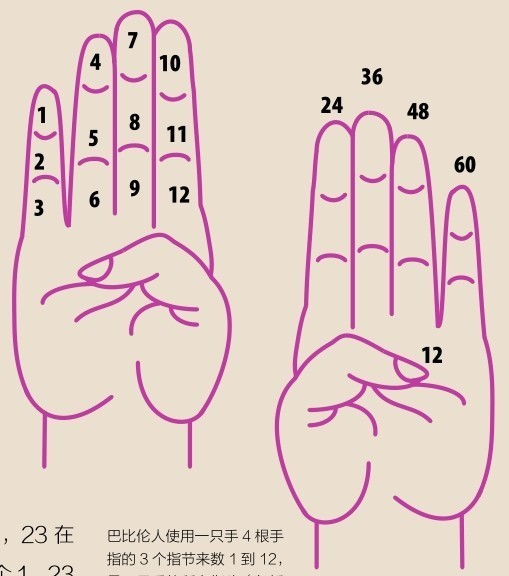
巴比伦人使用一只手4根手指的3个指节来数1到12，另一只手的所有指头（包括拇指）数12到60。
基础
我们计数用的数字有10个数，我们称这套系统为十进制。可不都是如此，澳大利亚的原住民用5个数计数的五进制。比如，23在十进制里表示2个10再加上3个1，23在五进制里表示2个5再加上3个1，也就是十进制里的13。人们使用五进制是很好理解的，就是掰单手的手指头，而非双手。3000年前，在如今的伊拉克地区生活的巴比伦人是用双手计数的，但是数到60就停止了！
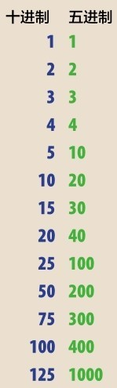
一列自然数，现在通用的十进制的写法，以及某些古代文化中五进制的写法。
木棍与石头
跟古埃及一样，巴比伦也被认为是数学的发源地。巴比伦人的书写系统被称为楔形文字，符号用尖端削成三角形的芦苇杆或木棍刻在湿陶土上，陶土烘烤之后成为凝固的文本。巴比伦数字也是这么书写的。第16页的图展示了两组符号，一组是1到10，另一组是10以上的数字。这两组符号有59种不同的排列方式，表示59以内的任何整数。但是一旦到了60，这套系统又得从头再来。数字60用1的符号代表，所以数字61写成一个单位1，接个空格，再接个单位1：第一个符号表示60，第二个符号表示1，空格表示这个数字里包含60。尽管习惯这个得花点工夫，六十进制还是挺有用的。数字60可以被2、3、4、5、6、10、12、15、20和30整除！而数字10只能被2和5整除，因此，与十进制相比，用六十进制自有其好处。这就是我们如今仍用它度量时间和角度的缘故（见第18页的图表）。
六十进制
巴比伦人既是天文学家，又是数学家。他们追踪太阳在天空的运动，指出每360天为一周期。这成为一年的长度。于是人们用360份或者360°来衡量圆周。太阳在白天的轨迹划分为12小时，夜间是另外12小时。（请注意现在这些数字都跟60有关。）一小时又分成60小份，或者说“分钟”。每分钟进一步分成60“次级分钟”，或者说“秒”。我们迄今仍沿用这套系统，它运转精良，如果没崩坏，就无须修正。
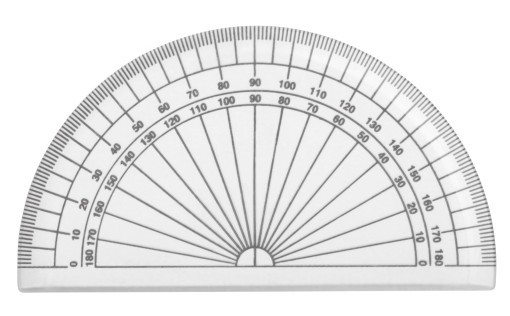
圆周的一半是180° （3×60），整圆是360° （6×60）。使用这些数字是因为它们便于整除。
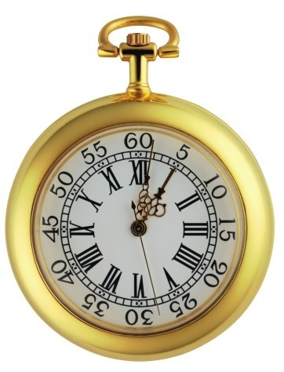
表盘分成12个大区和60个小区，这些都源于巴比伦数学。
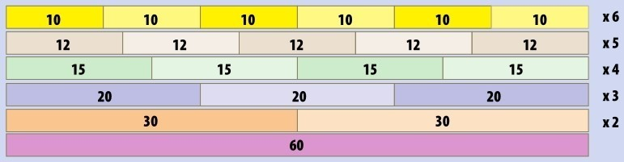
此表显示60可以用多个因子整除。
创始之艰
巴比伦系统因位而异，也就是说需要根据数字写在哪里去理解它表示什么。最右边是个位数，然后是60位数，以此类推（见第30页）。这是最早的进位制范例，现在我们使用的数字系统也是采用进位制。进位制的数字系统在东方的亚洲更为发扬光大，而欧洲的数字与之不同。大约2500年以前，希腊是世界文化中心之一。古希腊人用希腊字母书写数字，24个希腊字母用光之后，他们就用类似字母的符号来表示更大的数字。古希腊数字系统在计量大数或者记录大数的时候可不好用。大部分古希腊人——可以推测，正如大部分古代人——用这些符号来估计大数就够了。这套符号里最大的是M，意思是数以万计，也就是10 000，但是通常意味着“数不胜数”。在英语里，“myriad--无数”也有类似的含义，还有些别的说法（见下面的方框）。古希腊数学家阿基米德（见第71页）在后文中会频频出场，他发明了一个新数MM--数以亿计，也就是100 000 000。古希腊数学多专注于几何学，关心线和形胜于数，这就是他们数字系统的局限性所在。
罗马数字
罗马人用字母来书写数字。这套系统是五进制的。I代表1，V代表5，X代表10，L代表50，C代表100，D代表500，M代表1000。请注意IV代表“差1个到5”，也就是4。
1 I
2 II
3 III
4 IV
5 V
6 VI
7 VII
8 VIII
9 IX
10 X
11 XI
12 XII
13 XIII
14 XIV
15 XV
16 XVI
17 XVII
18 XVIII
19 XIX
20 XX
21 XXI
22 XXII
23 XXIII
24 XXIV
25 XXV
26 XXVI
27 XXVII
28 XXVIII
29 XXIX
30 XXX
40 XL
50 L
60 LX
70 LXX
80 LXXX
90 XC
100 C
150 CL
200 CC
500 D
1000 M
1500 MD
2000 MM
2016 MMXVI
数的名字
数字有时有数学以外的名字。有些别名现在还在使用，有些就不用了。
dozen 来自法语，意思是“12个一组”
score 意思是20，源于维京语言
twelfty 120
gross 12的12倍，144
longthousand 100打，1200
milliard 古英语，10亿
billiard 古英语，亿亿亿
lakh 印度语，10万
crore 印度语，1000万
回到计数符号了吗？
当罗马人在2000年前占领了欧洲及周边区域，他们引入了以字母为基础的数字系统。从某些角度上来说，罗马系统简明易懂，但是书写大数很困难，计算也很复杂。简单来说，罗马数字很像计数符号（见第12页），每个数字都代表它包含了几个1。所以开头的I、II、III代表1、2、3。然而，罗马系统更智能一点，它用5和10构成大数字。换言之，有一套崭新的系统来描述5的倍数：V就是5，L是50，D是500。还有一套系统来描述10的倍数：X是10，C是100，M是1000。看来罗马有一套可以构造大数的系统。
加法
与巴比伦系统不同，罗马数字系统不是进位制的，专家们称之为加法系统。它的意思是把所有符号的值加起来得到数字。最大的数在前。所以，LXVI就是50+10+5+1=66，DCLXV就是500+100+ 50+10+5=665。这需要一些练习，但阅读起来也挺简单。空间紧张的时候，比方说刻在雕像或墓碑上，有些数字就用减法来简写：4就是IV，或者“比5少1”；9就是IX，40是XL。但是，写在纸面上时不采用这套减法系统：4就是IIII，9就是VIIII。这样便于用罗马数字做加法。事实上，这大概比我们如今使用的系统还简洁。罗马数字做加法，可以把两个符号合并起来，从大的开始写。所以CXXVII（127）+ LVIII（58）求和成了CLXXVVIIIII。这个符号需要整合成大数。从尾端最小的数开始， IIIII变成V，这就构成了VVV，即XV，最终这数成了CLXXXV，或者说185。成功啦！罗马人知其然，只是不知其所以然。减法也挺简单，可以从小数开始划去，一直划到大数。所以，对于MDLI（1551）-MXI（1011），我们划掉M，保留D。我们再把L改写成XXXXX，划掉一个X，还剩XXXX，最后把I划掉，结果就是DXXXX或者说540。（看第25页的内容，可以对罗马数学了解更多。）
中国竹筹
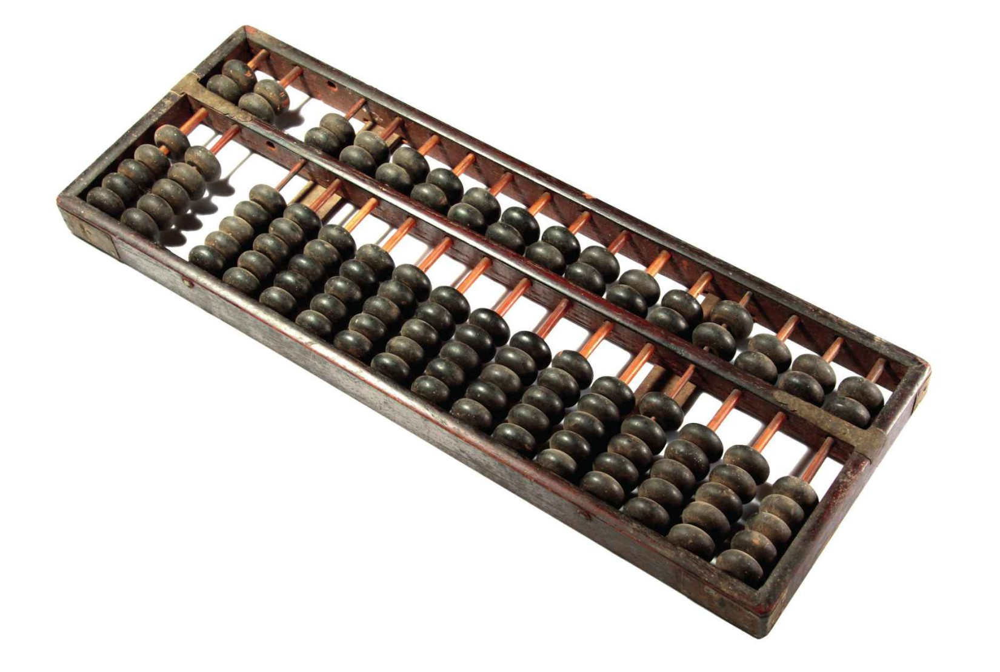
对于能手，算盘是强大的计算器。
大约4000年前，中国人发明了用小竹筹书写数字的简便办法。竹筹如下图所示，摆成各种样式来表示各个数字。使用进位制系统，表示小数字的竹筹并排放置表示大数字。这个挺简单的，但是竹筹交界的地方，由于竹筹摆放位置不同，容易混淆。由于没有表示零的符号，就在两个竹筹之间空一格表示。大约2000年前，中国商人和数学家开始使用算盘。中国形制的算盘里，下部的算珠用来数1到5，上部的记录5的个数。
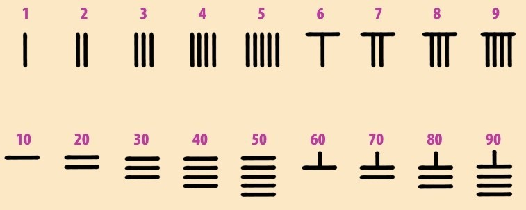
中国竹筹计数最多画5条线来表示一个数。
乘法难题
用罗马数字做乘法就困难得多。做法是构建两列数，第一列是把被乘数折半取整，不断重复，一直到1。第二列是把乘数加倍，前面折半多少次，这里就加倍多少次。然后对于第一列中是偶数的那些行，两列中都要划掉。最后把第二列剩余的数全都加起来。听起来挺复杂，没错，就是挺复杂。简单点的方法也有一个，跟我们当今用的乘法差不多，可是罗马人不用哦！方法是将一个数里的每个数位的值与另一个数的各数位的值相乘，然后把得到的一串数加到一起。罗马数字的数码只有7个值（1、5、10、50、100、500、1000），你只要记住一个含其中6个数码的六六乘法表（见第22页）就行了，但是这样做速度会慢一点。例如，XVI(16)×VII(7)就是(X×VII)+(V×VII)+(I×VII)，或者说LXX+XXVVV+VII。把它们都加起来就是LXXXXVVVVII，也就是LXXXXXXII，即CXII或者112。验算一下，然后请看第25页的另一个例子。
乘法表是用印度-阿拉伯数字连续展现的，跟下图的罗马版本做个对比吧。
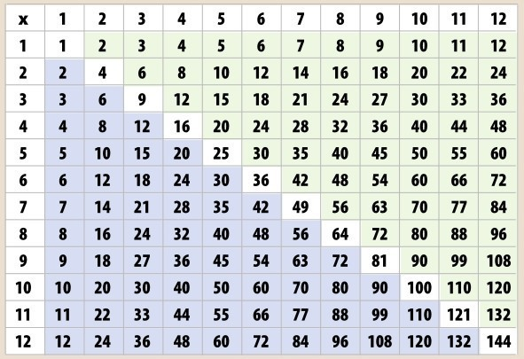
罗马数字的乘法需要把1、5、10、50、100和500分别乘起来（下表为罗马数字前6个数码的乘法表）。V上加个横杠在这里表示5000。
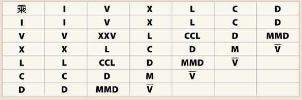
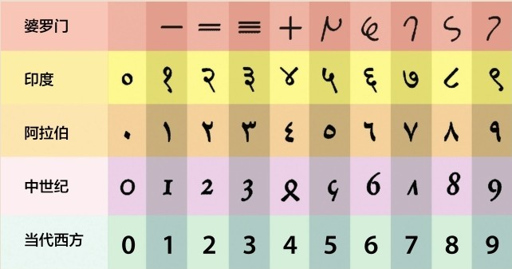
图中展示了印度-阿拉伯数字的10个数字符号的演进。印度数字出现于公元5到6世纪，阿拉伯数字源于9世纪。如今二者都在使用，在西方符号系统中的功能完全一样。
新思路
罗马数字在现实世界的计数工作中很好用——军团中的士兵数、应纳税额或者一船谷物的数量都不会太多。因此，即使公元5世纪罗马帝国终于在西欧消亡之后，欧洲还一直沿用这些数字和计算方法。事实上，东罗马帝国在东欧一直存在，直到15世纪，只是易名为拜占庭帝国，以君士坦丁堡（如今是土耳其的伊斯坦布尔）为基业。然而，拜占庭数学家使用基于古希腊数字系统的一套数字，也并不比罗马的强。随着阿拉伯人将势力范围从中近东和北非拓展到东部和南部欧洲，到8世纪，伊斯兰帝国从阿富汗扩张到西班牙南部。在印度附近行贾的阿拉伯商人在数字系统上进入了一个全新的世界--至少对于他们而言是全新的。这个大创新结合了进位制系统与一个新数码--零。（它也是数码吗？我们稍后再加详述，参见第30页。）罗马人、希腊人、巴比伦人都有关于“空”或“无”的概念，但是不形诸数字--干嘛要费劲数个没有的数呢？
12到13世纪的数学家，比萨的列奥纳多，又名斐波那契，是率先提出应该用阿拉伯数字取代罗马数字的欧洲人。
占位
今天的数字我们已经很熟悉了：数码有10个（包括0），数字按它们值的大小书写。正如巴比伦系统一样，数字是进位制的。从右往左写下的第一个数码代表0到9，第二个代表10到90， 第三个代表百，以此类推。你已经知道这是怎么回事了。
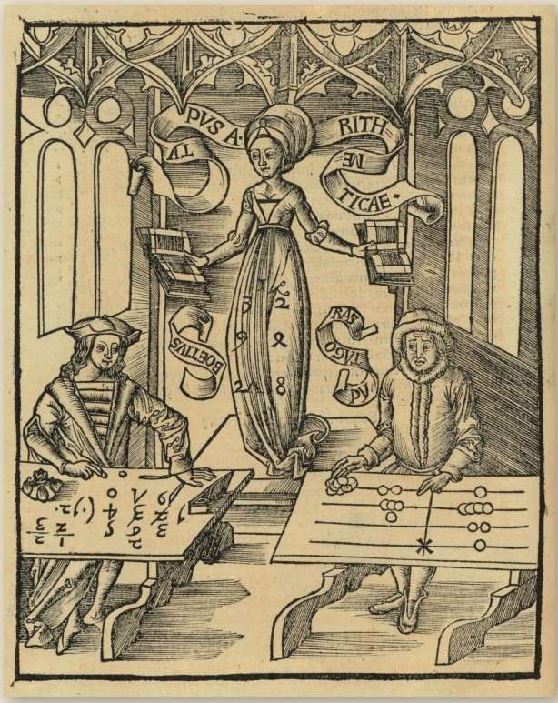
16世纪的一幅版画展示了算术家书写数字的画面，其中两人用罗马数字计数板，正在较量数学。最终，这一天用印度-阿拉伯数字的算术家赢啦。
《计算之书》
几个世纪之后，印度-阿拉伯数字系统在全世界传播，并且于10世纪在西班牙和葡萄牙的伊斯兰地区通用。这套数字系统逐步向北流传，慢慢地浸染欧洲文化。12世纪末期，有个意大利富商之子随其父的商旅造访北非。他是比萨的列奥纳多，以昵称斐波那契而扬名（见第80页）。回溯到1202年的意大利，斐波那契写了一本数学书《计算之书》——意思是关于算术的书。此书对于商人来说是一部指南，指导他们如何记录商务事件，而且书里充满了迷人的数学细节和谜题，斐波那契对此兴味盎然，其中就讲述了印度-阿拉伯数字系统的威力。斐波那契见识了阿拉伯商人做复杂计算是何等迅捷，远胜于采用“迟钝”的罗马数字系统，他意识到用这个法子进行数学运算将有何等进步。我们知道《计算之书》的出版正是全世界开始使用现代数字系统的时间点，但是长路漫漫：直到15世纪罗马数字才在欧洲占据主导地位；中国开始使用阿拉伯数字系统是在17世纪；而直到18世纪，俄国才用现代数字取代了基于希腊数字的系统。
参见：
▶零，第30页
▶斐波那契数列，第80页
原理
现在我们对数字系统有了更多的了解，下面看几个应用罗马数字的例子吧。
罗马数字转为现代数字：
DLXXVI
=D+L+X+X+V+I
=500+50+10+10+5+1
=576
罗马数字做加法：
XVI+CLII(16+152)
=X+V+I+C+L+I+I
=10+5+1+100 +50+1+1
=168
罗马数字做乘法：
XX×VI(20×6)
=(X×V)+(X×V)+(X×I)+(X×I)
=L+L+X+X
=CXX=120